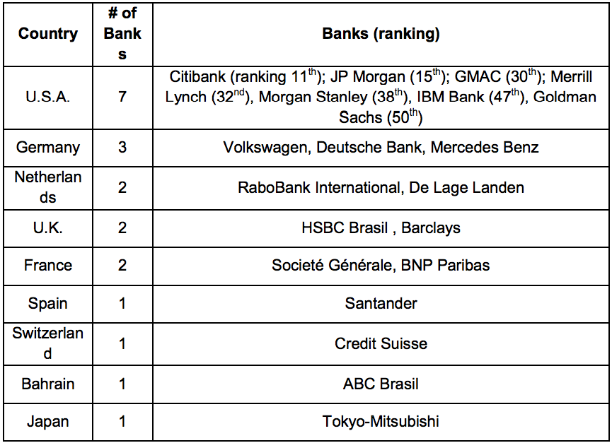

The Brazilian banking system today is very efficient. Most banks have sophisticated Internet sites offering most, if not all, of their products and services. Bank branches are numerous and nearly all cities in the country have at least one major bank branch. The five largest banks have approximately 15,000 branches throughout Brazil. International operations are centralized at the bank’s headquarters, usually in São Paulo or Rio de Janeiro, although major branches at larger cities may handle routine operations involving trade finance. All Brazilian banks have a number of affiliated banks around the world.
Number of Foreign Banks and Origins
According to the Brazilian Central Bank, of the top 10 banks in Brazil ranked in December 2013 by net equity, three are state owned banks (Banco do Brasil, Caixa Econômica Federal, and BNDES, though latter is not a commercial bank), five are privately- held Brazilian banks (Bradesco, Itaú-Unibanco, Votorantim, Safra and BTG Pactual); and two are foreign (Banco Santander based in Spain and HSBC Bank based in England). U.S.-based Citibank ranks 11th.
Of the top 50 banks in Brazil, 20 are owned or controlled by foreign interests. The foreign banks are ranked by net equity as follows (as of December 2013):
